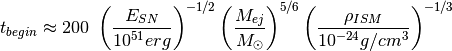
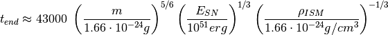
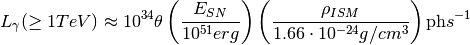

Bases: object
Simple supernova remnant (SNR) evolution model.
The model is based on the Sedov-Taylor solution for strong explosions.
Reference: http://adsabs.harvard.edu/abs/1950RSPSA.201..159T
| Parameters: | e_sn : Quantity
theta : Quantity
n_ISM : Quantity
m_ejecta : Quantity
t_stop : Quantity
|
|---|
Attributes Summary
| sedov_taylor_begin | Characteristic time scale when the Sedov-Taylor phase of the SNR’s evolution begins. |
| sedov_taylor_end | Characteristic time scale when the Sedov-Taylor phase of the SNR’s evolution ends. |
Methods Summary
| luminosity_tev([t, energy_min]) | Gamma-ray luminosity above energy_min at age t . |
| radius([t]) | Outer shell radius at age t. |
| radius_inner(t[, fraction]) | Inner radius at age t of the SNR shell. |
Attributes Documentation
Characteristic time scale when the Sedov-Taylor phase of the SNR’s evolution begins.
Notes
The beginning of the Sedov-Taylor phase of the SNR is defined by the condition, that the swept up mass of the surrounding medium equals the mass of the ejected mass. The time scale is given by:

Characteristic time scale when the Sedov-Taylor phase of the SNR’s evolution ends.
Notes
The end of the Sedov-Taylor phase of the SNR is defined by the condition, that the temperature at the shock drops below T = 10^6 K. The time scale is given by:

Methods Documentation
Gamma-ray luminosity above energy_min at age t .
The luminosity is assumed constant in a given age interval and zero before and after. The assumed spectral index is 2.1.
Reference: http://adsabs.harvard.edu/abs/1994A%26A...287..959D (Formula (7)).
| Parameters: | t : Quantity
energy_min : Quantity
|
|---|
Notes
The gamma-ray luminosity above 1 TeV is given by:
